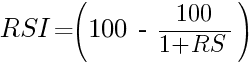
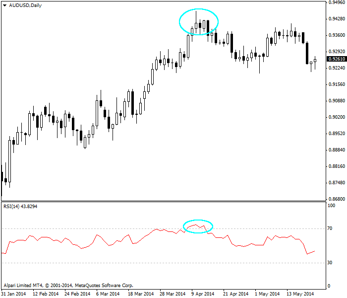
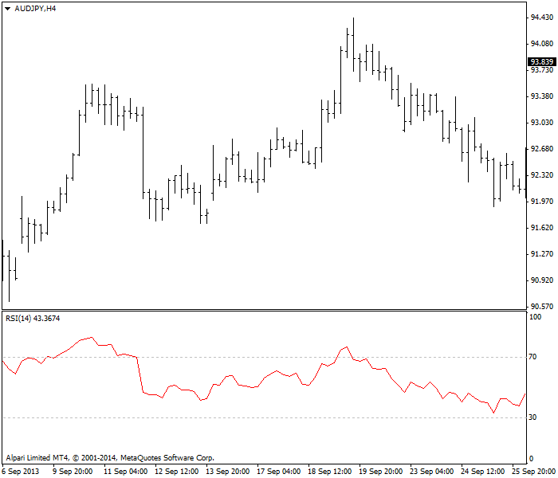
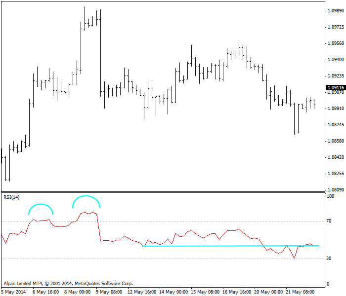

<!DOCTYPE html>
<html>
</html>
<head>
  <meta charset="utf-8">
  <meta http-equiv="X-UA-Compatible" content="IE=edge">
  <title>外汇站（fx-z.com） - 相对强弱指数</title>
  <meta name="description" content="">
  <meta name="viewport" content="width=device-width, initial-scale=1">
  <meta name="robots" content="all,follow">
  <!-- Bootstrap CSS-->
  <link rel="stylesheet" href="vendor/bootstrap/css/bootstrap.min.css">
  <!-- Font Awesome CSS-->
  <link rel="stylesheet" href="vendor/font-awesome/css/font-awesome.min.css">
  <!-- Google fonts - Roboto-->
  <link rel="stylesheet" href="https://fonts.googleapis.com/css?family=Roboto:400,300,700,400italic">
  <!-- owl carousel-->
  <link rel="stylesheet" href="vendor/owl.carousel/assets/owl.carousel.css">
  <link rel="stylesheet" href="vendor/owl.carousel/assets/owl.theme.default.css">
  <!-- theme stylesheet-->
  <link rel="stylesheet" href="css/style.default.css" id="theme-stylesheet">
  <!-- Custom stylesheet - for your changes-->
  <link rel="stylesheet" href="css/custom.css">
  <!-- Favicon-->
  <link rel="shortcut icon" href="img/favicon.png">
  <!-- Tweaks for older IEs--><!--[if lt IE 9]>
    <script src="https://oss.maxcdn.com/html5shiv/3.7.3/html5shiv.min.js"></script>
    <script src="https://oss.maxcdn.com/respond/1.4.2/respond.min.js"></script><![endif]-->
</head>
<body>
  <div id="all">
    <div class="container-fluid">
      <div class="row row-offcanvas row-offcanvas-left"> 
        <!--   *** SIDEBAR ***-->
        <div id="sidebar" class="col-md-4 col-lg-3 sidebar-offcanvas">
          <div class="sidebar-content">
            <h1 class="sidebar-heading"> <a href="https://fx-z.com">fx-z.com</a></h1>
            <p class="sidebar-p">介绍外汇相关的基本知识，告诉您如何进行自己的技术面和基本面分析，讲解先进的交易理念，并且为您阐述失败交易者与专业交易者之间的真正区别。 </p>
            <p class="sidebar-p">通过这些课程的学习，您将学会如何根据自己的优势来应用情绪分析，还将了解真实世界的事件会对货币汇率产生什么影响，央行在外汇市场中所发挥的作用，以及交易者在颇受欢迎的即期外汇交易中有哪些选择方案。 </p>
            <ul class="sidebar-menu">
                <!-- Link-->
                <li class="sidebar-item"><a href="https://fx-z.com" class="sidebar-link">首页</a></li>
                <!-- Link-->
                <li class="sidebar-item"><a href="cihui.html" class="sidebar-link">外汇词汇</a></li>
                <!-- Link-->
                <li class="sidebar-item"><a href="ebook.html" class="sidebar-link">获取外汇电子书</a></li>
            </ul>
            <p class="social"><a href="https://www.cn-forextime.com/zh?partner_id=4920383" target="_blank"data-animate-hover="pulse" class="external facebook"><i class="fa fa-eur"></i></a><a href="https://www.cn-forextime.com/zh?partner_id=4920383" target="_blank" data-animate-hover="pulse" class="external gplus"><i class="fa fa-gbp"></i></a><a href="https://www.cn-forextime.com/zh?partner_id=4920383" target="_blank" data-animate-hover="pulse" class="external twitter"><i class="fa fa-rmb"></i></a><a href="https://www.cn-forextime.com/zh?partner_id=4920383" target="_blank" title="" class="external instagram"><i class="fa fa-dollar"></i></a><a href="https://www.cn-forextime.com/zh?partner_id=4920383" target="_blank" data-animate-hover="pulse" class="email"><i class="fa fa-money"></i></a></p>
            <div class="copyright text-center text-md-left">
             
              
            </div>
          </div>
        </div>
        <!--   *** SIDEBAR END ***  -->
        <!--   *** DETAIL ***-->
        <div class="col-md-8 col-lg-9 content-column white-background">
          <div class="small-navbar d-flex d-md-none">
            <button type="button" data-toggle="offcanvas" class="btn btn-outline-primary"> <i class="fa fa-align-left mr-2"></i>菜单</button>
            <h1 class="small-navbar-heading"> <a href="https://fx-z.com/8-9.html">下一篇 </a></h1>
          </div>
          <div class="row">
            <div class="col-xl-10">
              <div class="content-column-content">
                <h1>相对强弱指数</h1>
     <p>
    相对强弱指数（RSI）是技术分析中最重要的概念之一。它由 Welles Wilder 发明（他还发明了ATR 和抛物线转向指标），但之后其基本理念被其他人修订和改编，因此您将见到关于该指数的不同版本。奇怪的是，三位改编者名字的首字母均为 C——Cardwell、Cutler 和 Chande。
</p>
<p>
    相对强弱指数的核心理念在于，计算固定时段内涨幅与跌幅的比率，以便将它换算为 0 到 100 以内的震荡指标。除了能够衡量动量以外，RSI 线还可以指示走势的结束点，因为我们认为动量比价格提前结束。
</p>
<p>
    其公式先计算相对强度，即用收盘价高于开盘价天数的 14 时段指数移动平均线除以收盘价低于开盘价天数的 14 时段指数移动平均线。请注意，14 时段是 Wiler 提出的时间，之后的改编者还建议采用 9 时段和 25 时段；此外，您可以进行回测，以得出最适合您货币和时间周期的时段数。
</p>
<p>
    例如，您的货币收盘价在 14 天中有 9 天高于开盘价。取 9 天的上涨平均值，除以 14（而不是 9）。取剩余 5 天的下跌平均值，也除以 14。用上涨天数的平均值除以下跌天数的平均值，即得到相对强度。
</p>
<p>
    得到相对强度或 RS 后，将它换算为以下震荡指标：
</p>
<p>
     
</p>
<p>
    RSI 与随机震荡指标相似——高于特定值（Wilder 建议 70）值被视为超买状态，低于特定值（Wilder 建议 30）被视为超卖状态。软件几乎总是在这些位置显示一条水平线。您可以使用 RSI 在这些位置生成买入、卖出信号。
</p>
<p>
    以下图表为基础 RSI（窗口底部）。圆圈处显示货币进入超买状态并可能下跌。
</p>
<p>
     RSI 显示货币对被超买。
</p>
<p>
    RSI 的另一项用途是用来识别背离位置，即指标开始下行，但价格仍在上行。另一种背离是价格创下新高或新低，但 RSI 尚未验证。RSI 可能达到更高点，但不是近期的最高点。这两种情况下，背离是在提示走向即将改变。基于背离的交易决策具有很强的可靠性。
</p>
<p>
    另外，RSI 还可以识别即将出现的逆转，被 Wilder 称为“失败摆动”。如果 RSI 首先下穿 30 超卖位，然后反弹回 30 以上，然后再跌至其下，这种情况被称为失败摆动。之后，RSI 上穿 30 且坚守该位。现在，您可以预计走势到达范围内另一端。请注意，您只查看了 RSI 指标，并未参考相关价格曲线。
</p>
<p>
    空头失败摆动即为镜像。RSI 在高于 70 的位置达到顶点（例如 75），接着下跌至 70 以下（例如 60）——即失败点，然后再次到达顶点（虽然未能到达之前的顶点 75）。未能达到前一个顶点标志着失败摆动可能已经形成，而且您将希望在价格跌至 70 以下时卖出。许多分析师认为 60 和 40 很可能是失败摆动的备选点。以下图表为空头失败摆动。在本例中，我们还在相关价格序列中遇到一个大致双重顶，但情况并非总是如此。
</p>
<p>
    AUD/JPY 上的经典失败摆动和 RSI
</p>
<p>
    您也可以将 RSI 作为其他指标，尤其是移动平均线交汇点，的验证指标。最后，您经常可以在 RSI 上见到图表形态，例如双重顶、头肩形态等。您甚至可以在这项指标上绘制支撑线和阻力线，这并不奇怪——毕竟，这项指标上的价格数据与普通图表上的价格数据相同，只不过略有调整。
</p>
<p>
    下一个图表显示另一种货币从超买状态进入超卖状态，且具有双重顶。注意，价格快结束时的大幅下行曲线出现在双重顶颈线被打破之后（即经典效应）。另外，本图标并未显示失败摆动，因为第二个顶点已超过第一个顶点。失败摆动第二次突破超买线时不会到达第一个顶点。
</p>
<p>
     RSI 图表上的双重顶形态
</p>
<p>
    请注意区分单种证券的相对强弱指数与“相对强度”的区别；相对强度是将两种证券相除的比率（例如黄金与白银）。从逻辑上而言，我们不在外汇中使用相对强度，因为交叉汇率已经具备它的功能。
</p>
<p>
    <br/>
</p>
<p>
    <br/>
</p>
              </div>
            </div>
          </div>
        </div>
      </div>
    </div>
  </div>
  <!-- JavaScript files-->
  <script src="vendor/jquery/jquery.min.js"></script>
  <script src="vendor/popper.js/umd/popper.min.js"> </script>
  <script src="vendor/bootstrap/js/bootstrap.min.js"></script>
  <script src="vendor/jquery.cookie/jquery.cookie.js"> </script>
  <script src="vendor/owl.carousel/owl.carousel.min.js"></script>
  <script src="vendor/masonry-layout/masonry.pkgd.min.js"></script>
  <script src="js/front.js"></script>
</body>